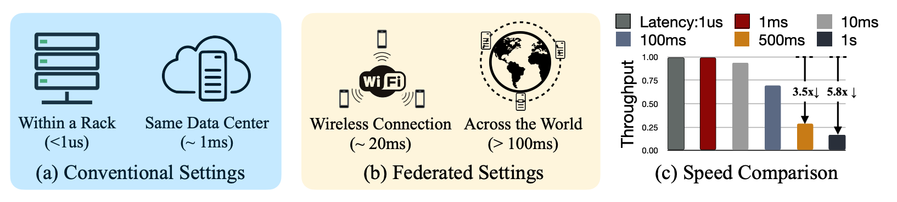
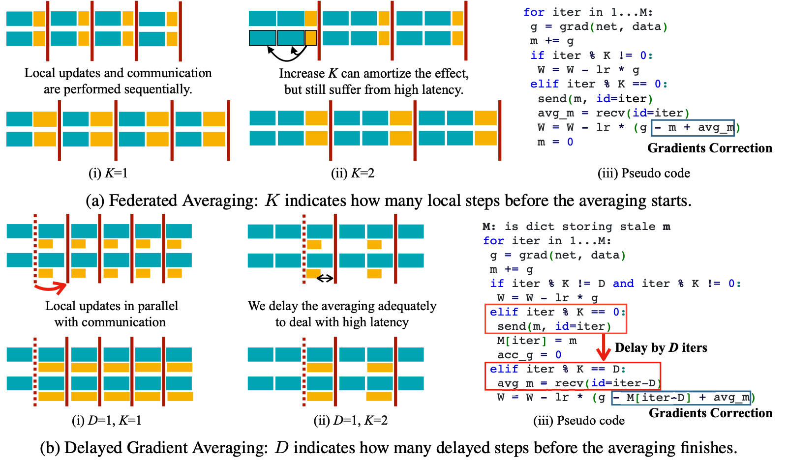
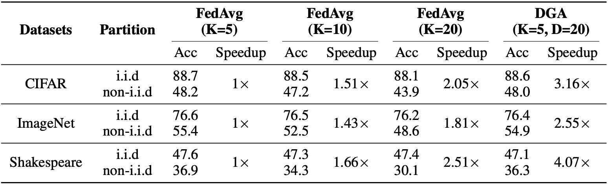
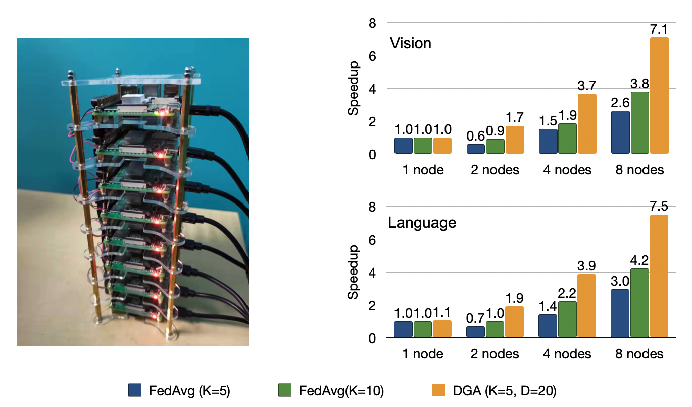

Delayed Gradient Averaging: Tolerate the Communication Latency for Federated Learning
Federated Learning is an emerging direction in distributed machine learning that en-ables jointly training a model without sharing the data. Since the data is distributedacross many edge devices through wireless / long-distance connections, federatedlearning suffers from inevitable high communication latency. However, the latencyissues are undermined in the current literature [15] and existing approaches suchas FedAvg [27] become less efficient when the latency increases. To overcomethe problem, we proposeDelayedGradientAveraging (DGA), which delays theaveraging step to improve efficiency and allows local computation in parallel tocommunication. Wetheoreticallyprove that DGA attains a similar convergencerate as FedAvg, andempiricallyshow that our algorithm can tolerate high networklatency without compromising accuracy. Specifically, we benchmark the trainingspeed on various vision (CIFAR, ImageNet) and language tasks (Shakespeare),with both IID and non-IID partitions, and show DGA can bring 2.55$\times$to 4.07$\times$speedup. Moreover, we built a 16-node Raspberry Pi cluster and show that DGAcan consistently speed up real-world federated learning applications

The training settings of conventional distributed training v.s. federated learning are very different. High latency cost greatly degrades the FedAvg’s performance, proposing a severe challenge to scale up the training system. We need to design algorithms to deal with the latency issue.

The flatten view of our algorithm. The averaging occurs periodically with period K and the delay parameter D naturally shows up indicating the number of gradients between the sending and reception. The cyan cube in the visualization (a,b) indicates local computation and the yellow cube represents the transmission of the averages. The red bar indicates when the averaging is actually performed. In DGA, the transmission is in parallel to the computation, which is the main reason why DGA can tolerate high latency.
The convergence rate of DGA is $ O (\frac{\Delta+\sigma^2}{\sqrt{JN}}+ \frac{Jd^2}{N}) $ (details in paper).
When $ D < O(N^{\frac{1}{4}} J^{-\frac{3}{4}}) $, DGA converges as fast as original SGD which is $ O (\frac{\Delta+\sigma^2}{\sqrt{JN}}) $.

Comparison of FedAvg and our DGA’s accuracy on 3 datasets with both i.i.d and noni.i.d partitions. The speedup is measured on latency with 1s latency. Not only DGA demonstrates consistent training speedup, but also DGA maintains the accuracy, on both i.i.d and non-i.i.d partition.

Left: Our Raspberry Pi farm. Experiments are conducted on two racks. Right: The speedup comparison between FedAvg and DGA~on Raspberry Pi cluster. On both vision and language tasks, DGA demonstrate consistent improvement over FedAvg.
@inproceedings{zhu2021dga,
title = {Delayed Gradient Averaging: Tolerate the Communication Latency in Federated Learning},
author = {Zhu, Ligeng and Lin, Hongzhou and Lu, Yao and Lin, Yujun and and Han, Song},
booktitle = {Annual Conference on Neural Information Processing Systems (NeurIPS)},
year = {2021}
}
Acknowledgments: We thank MIT-IBM Watson AI Lab, Samsung, Woodside Energy, and NSF CAREER Award #1943349 for supporting this research. Hongzhou Lin acknowledges that the work is done prior to joining Amazon. Yao Lu acknowledges that the work is done prior to joining Google.